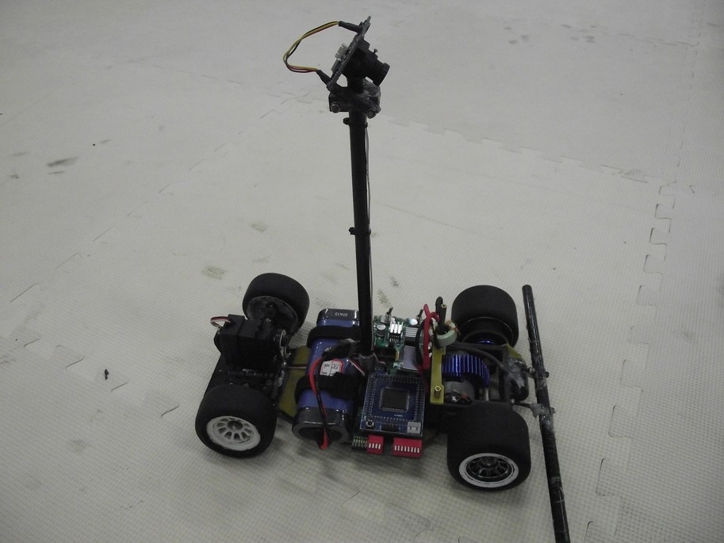

Welcome
 机器人学爱好研究者， 主要专注于机器人多传感器融合状态估计，同步建图与定位(SLAM). 2018年于同济大学获得控制科学与工程硕士学位，旋即加入驭势科技从事机器人定位系统工作。
机器人学爱好研究者， 主要专注于机器人多传感器融合状态估计，同步建图与定位(SLAM). 2018年于同济大学获得控制科学与工程硕士学位，旋即加入驭势科技从事机器人定位系统工作。
在此展示一些我撰写的论文、演示视频、开源程序和数据集等.
Links:
 GitHub
GitHub
Contact:
1531651@tongji.edu.cn
Project Highlights
Stereo-VI-DSO:双目直接稀疏视觉惯性里程计
Stereo-VI-DSO 是我主导开发的视觉-惯性里程计(VIO)，使用双目相机和is a direct and sparse visual odometry method I developed, that combines the benefits of direct methods with those of sparse, point-based methods - greatly exceeding LSD-SLAM in runtime, accuracy and robustness. I developed DSO partly during my internship with Prof. Vladlen Koltun at Intel, and partly during my PhD at TU Munich with Prof. Daniel Cremers. You can find the open-source code on GitHub. We also created the TUM monoVO dataset, 50 real-world, "out-of-the-lab" monocular sequences for benchmarking and evaluation which can be found here.
Development and extention of DSO is carried on in the TU Munich Computer Vision group, see here.
Original Publication (TPAMI):  [pdf] (see Publications for more related papers)
[pdf] (see Publications for more related papers)
基于LSD-SLAM的机器人路径规划和轨迹跟踪系统
LSD-SLAM is a semi-dense, direct SLAM method I developed during my PhD at TUM. It was based on a
 semi-dense monocular odometry approach,
and - together with colleagues and students - we extended it to
run in real-time on a smartphone,
run with stereo cameras,
run as a tightly coupled visual-inertial odometry,
run on omnidirectional cameras,
and even to be used for autonomously navigating a toy quadrocopter.
For the original monocular version, we published open-source code on GitHub.
semi-dense monocular odometry approach,
and - together with colleagues and students - we extended it to
run in real-time on a smartphone,
run with stereo cameras,
run as a tightly coupled visual-inertial odometry,
run on omnidirectional cameras,
and even to be used for autonomously navigating a toy quadrocopter.
For the original monocular version, we published open-source code on GitHub.
Original Publication (ECCV): [pdf] (see Publications for more related papers)
2013全国大学生Freesclae智能车竞赛
For my Master's Thesis (also at TUM, with Juergen Sturm and Daniel Cremers), I worked on allowing a low-cost commodity quadrocopter (Parrot AR.Drone) fly autonomously in unknown environments, using PTAM. The resulting system was demonstrated in public on many occasions; you can find the open-source code on GitHub.
Original Publication (RAS): [pdf] (see Publications for more related papers)

Publications
 Direct Sparse Visual-Inertial Odometry with Stereo Cameras (Ziqiang Wang, Chengcheng Guo), No open,under review by IROS, 2019.
Direct Sparse Visual-Inertial Odometry with Stereo Cameras (Ziqiang Wang, Chengcheng Guo), No open,under review by IROS, 2019.
[补充材料]
[视频]
 Wheeled Robots Path Planing and Tracking System Based on Monocular Visual SLAM (Ziqiang Wang, Hegen Xu, Youwen Wan), 2018.
Wheeled Robots Path Planing and Tracking System Based on Monocular Visual SLAM (Ziqiang Wang, Hegen Xu, Youwen Wan), 2018.
[pdf]
[video]
[code]
 Research and Implementation of Robot Path Planning Based on VSLAM (Ziqiang Wang, Hegen Xu, Youwen Wan), In International Conference on Electrical Engineering, Control and Robotics (EECR), 2018.
Research and Implementation of Robot Path Planning Based on VSLAM (Ziqiang Wang, Hegen Xu, Youwen Wan), In International Conference on Electrical Engineering, Control and Robotics (EECR), 2018.
[pdf]